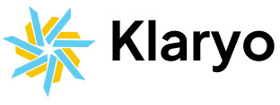

KLARYO è pagato dagli installatori partner quando ricevono una richiesta. Quello che vedi qui è uguale sia che tu chieda un installatore sia che non lo faccia.
Non salviamo niente: le risposte restano nel tuo browser. Per trovare la casa, l'indirizzo e la posizione vengono mandati al servizio di mappe (in questa prova OpenStreetMap ed Esri; nella versione finale Google Maps). Non chiediamo nome, telefono o email.
È quella di Alessandro Franzoni, che ha fondato KLARYO. I numeri vengono dalle sue bollette e dai pagamenti del GSE del 2025.
Anteprima. Ragione sociale, privacy e termini sono in aggiornamento.